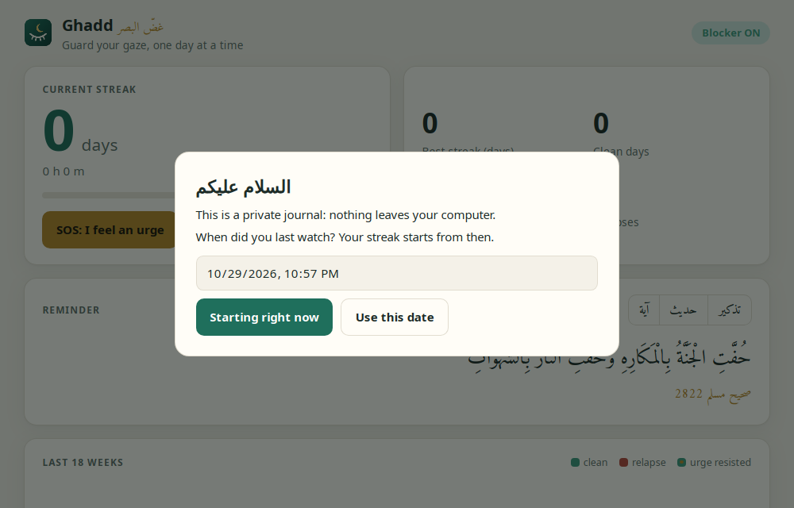
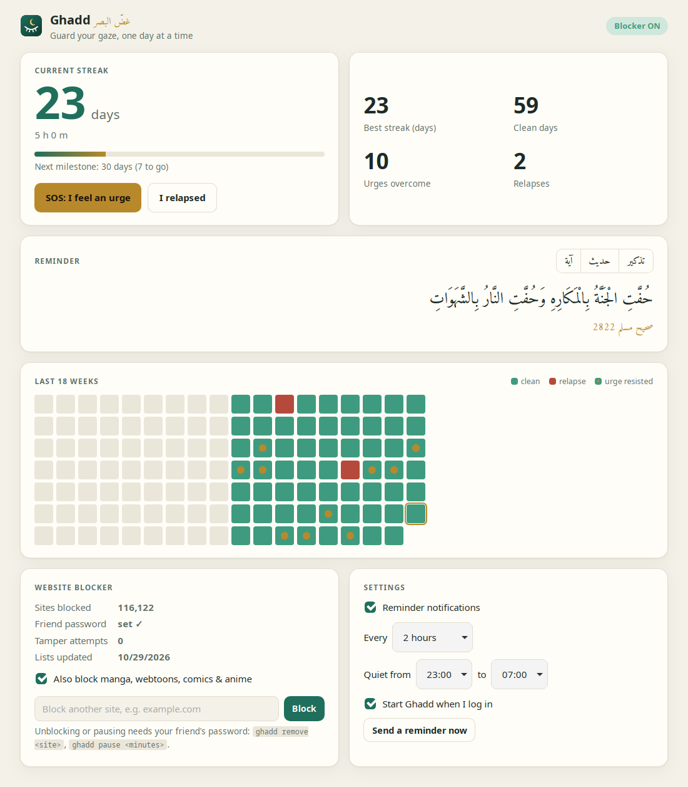
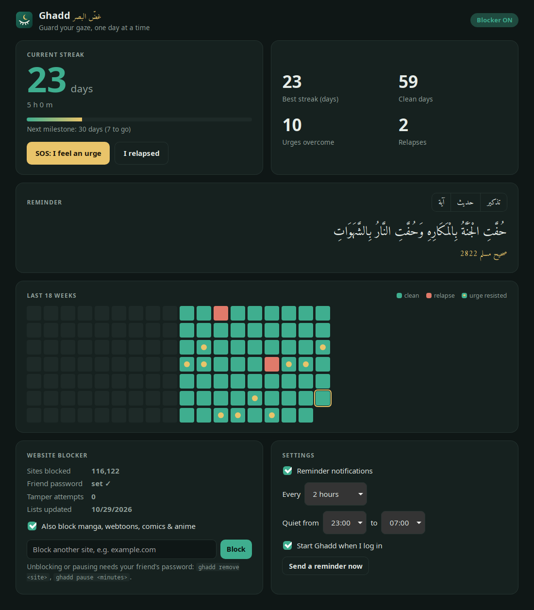
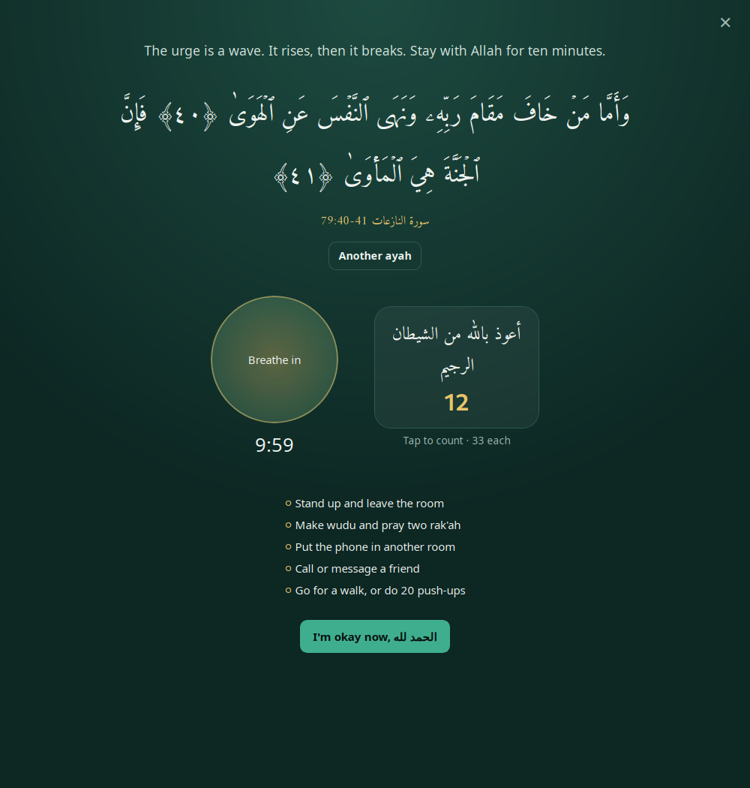
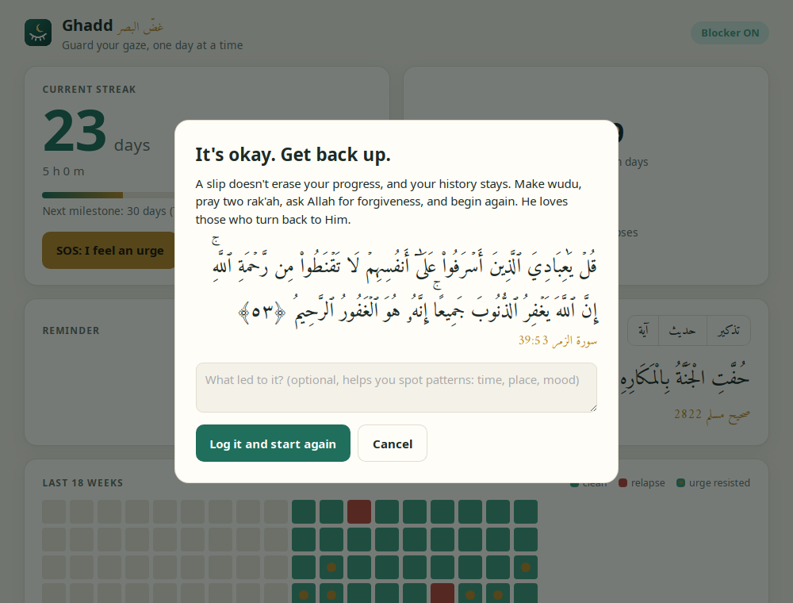
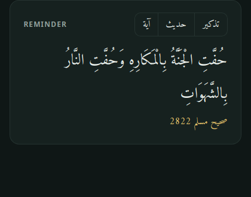

Ghadd غضّ البصر
User guide: install it, set it up with a friend, and use it every day.
قُل لِّلۡمُؤۡمِنِينَ يَغُضُّواْ مِنۡ أَبۡصَٰرِهِمۡ وَيَحۡفَظُواْ فُرُوجَهُمۡۚ ذَٰلِكَ أَزۡكَىٰ لَهُمۡۚ إِنَّ ٱللَّهَ خَبِيرُۢ بِمَا يَصۡنَعُونَ ﴿٣٠﴾
سورة النور 24:30
What Ghadd does
Ghadd is a free, open-source app for Arch-based Linux (built on CachyOS with KDE). It helps you quit pornography in three ways at once:
- It blocks. About 116,000 adult sites are blocked, along with an optional list of manga, webtoon, comic and anime sites. A family DNS filter catches sites missing from the lists, and SafeSearch and YouTube Restricted Mode are forced on.
- It locks. Only a trusted friend's password can unblock a site, pause blocking or turn it off. Blocking more never needs it.
- It supports you. It tracks your streak, sends reminders from the Quran and authentic hadith, and has an SOS screen for the moments that matter.
Install
- Build and install the package from the project folder:
cd ghadd/packaging makepkg -si - Start the blocker service and enable it at boot:
sudo systemctl enable --now ghaddd - Check that it's running:
You should seeghadd statusBlocking: ONand about 116,000 blocked domains. The first list download takes a few seconds. - Open Ghadd from your app menu (search "Ghadd").
Set the friend password
This is the most important step. Choose someone you trust: a brother, a friend or an imam. Give them the keyboard, look away, and let them run:
ghadd set-passwordThey type a password of at least 8 characters, twice. Don't watch them, and don't let them write it down anywhere you can find it. Only a one-way hash of it is stored, so nobody can read the password back from your computer.
First launch

The first time you open Ghadd, it asks when you last watched. Your streak counts from that moment.
- Starting right now begins a fresh streak.
- Or pick a past date and time, then Use this date.
Everything you log stays in a private database on your computer (~/.local/share/io.github.ghadd/). Nothing is uploaded anywhere.
The dashboard

Current streak
The big number is your clean days so far, with hours and minutes below. The bar shows progress to your next milestone: 1, 3, 7, 14, 21, 30, 40, 60, 90 days and beyond. When you reach one, you get a celebration notification.
Your numbers
- Best streak: your longest run ever.
- Clean days: every day since you started that had no relapse.
- Urges overcome: each time you finished an SOS session with "I'm okay now".
- Relapses: kept honestly, because patterns help you learn.
The calendar
The calendar shows the last 18 weeks: green for clean days, red for relapses, and a gold dot where you resisted an urge. The outlined square is today. Hover over a square to see its date.

When an urge hits: SOS

Press SOS: I feel an urge on the dashboard, or choose it from the tray icon menu. A calm full-screen view opens with:
- An ayah chosen for this moment. Press Another ayah for more.
- A 10-minute timer and a breathing circle: breathe in for 4 seconds, out for 6.
- A dhikr counter. Tap it to count, and every 33 it moves to the next phrase.
- Things to do right now: leave the room, make wudu, put the phone away, call a friend, go for a walk.
An urge is a wave: it rises and then it breaks. When it has passed, press I'm okay now. That logs a win and adds a gold dot to your calendar.
If you slip

Press I relapsed. Ghadd doesn't shame you: it reminds you of Allah's mercy and asks, optionally, what led to it (time, place, mood). Those notes help you spot your triggers.
Log it and start again resets the current streak. Your best streak, clean days and history are all kept.
Then make wudu, pray two rak'ah, make tawbah, and begin again.
Reminders and settings

The Reminder card shows a random ayah, hadith or short reminder. Use the آية · حديث · تذكير buttons to choose another of that kind.
The same content arrives as desktop notifications. Every hadith shows its book and its standard number (for example صحيح مسلم 2822), so you can look it up.
Settings card
| Setting | What it does |
|---|---|
| Reminder notifications | Turns notifications on or off. |
| Every … | How often a reminder comes: from 30 minutes to 6 hours. The default is 2 hours. |
| Quiet from … to … | No reminders during these hours. The default is 23:00–07:00. |
| Start Ghadd when I log in | Ghadd starts quietly in the tray at login. Recommended. |
| Send a reminder now | Sends one notification right away, to test it. |
The blocker
The Website blocker card shows whether blocking is on, how many sites are blocked, whether the friend password is set, and any tamper attempts.
What gets blocked
- Adult sites: the StevenBlack porn list plus the Anti-Porn HOSTS list, updated every week.
- Everything else adult: caught by Cloudflare's family DNS (1.1.1.3).
- Search and video: SafeSearch is forced on Google, Bing and DuckDuckGo, and Restricted Mode on YouTube.
- Browser bypasses: "Secure DNS" is turned off in Firefox and Brave, and Brave's Tor windows are disabled.
Manga, webtoons, comics and anime
Tick Also block manga, webtoons, comics & anime in the app, or run:
ghadd category on manga-animeThis blocks about 120 sites (244 domains, counting the www. versions): adult webtoon sites like toongod, manga and manhwa readers, Arabic manga and anime sites, anime streaming, and anime art boards. Turning it off needs the friend password. Because pirate sites change their domains often, add any new ones you find yourself (see below).
Block another site
Type it into the box on the blocker card and press Block, or run ghadd add example.com. This never needs a password, and the www. version is blocked too.
Tamper protection
Every 30 seconds Ghadd checks its files: the hosts file, the DNS settings and the browser policies. If anything was edited or deleted, it puts it back and records the attempt. You can see the record in the app or with ghadd tamper-log.
Command reference
| Command | What it does | Friend password? |
|---|---|---|
ghadd status | Shows whether blocking is on, the counts and the password state | No |
ghadd add <site> | Blocks another site | No |
ghadd category | Lists categories and whether they're on | No |
ghadd category on manga-anime | Blocks manga, webtoons, comics and anime | No |
ghadd category off manga-anime | Stops blocking that category | Yes |
ghadd remove <site> | Unblocks one site, for example a false positive | Yes |
ghadd pause <minutes> | Pauses everything for up to 24 hours, then turns back on by itself | Yes |
ghadd resume | Ends a pause early | No |
ghadd disable / ghadd enable | Turns blocking off until enabled / turns it back on | Yes / No |
ghadd set-password | Sets the friend password, or changes it (needs the old one) | To change it |
ghadd update-lists | Downloads the latest blocklists now | No |
ghadd tamper-log | Shows every tamper attempt | No |
Troubleshooting
Is the DNS filter really working?
resolvectl dns # wlan0 should show no server of its own
dig +short www.google.com # should print 216.239.38.120 (SafeSearch)If a network interface still shows your router's DNS (for example 192.168.100.1), wait 30 seconds; the watchdog resets it. If it doesn't, run sudo systemctl restart ghaddd.
The app says "Blocker not running"
sudo systemctl enable --now ghaddd
journalctl -u ghaddd -n 30A normal site is blocked
Ask your friend to type the password for ghadd remove <site>. If it's blocked by the family DNS rather than the lists, a short ghadd pause 10 lets you through.
Arabic letters and marks look broken
Ghadd ships its own Arabic fonts (Amiri and Amiri Quran), so harakat sit correctly whatever your system language or fonts. If you still see broken text, update to the latest version.
No notifications
Check that Reminder notifications is ticked and that you're not inside your quiet hours, then press Send a reminder now. In KDE, also check System Settings → Notifications → Applications → Ghadd.
Privacy, limits and uninstalling
- Privacy: no accounts and no tracking. Your journal never leaves your computer.
- An honest limit: anyone with
sudocan eventually get around any blocker on their own computer. Ghadd makes that slow, deliberate and recorded, so a weak moment has time to pass. For extra strength, set the family DNS (1.1.1.3) on your home router too, and let your friend keep the router password. - Uninstalling:
sudo pacman -R ghaddundoes every system change (hosts file, DNS, browser policies) and restores any file it replaced.
دليل سريع بالعربية
١. ثبّت التطبيق: cd ghadd/packaging && makepkg -si ثم sudo systemctl enable --now ghaddd
٢. اطلب من صديق تثق به أن يكتب كلمة السرّ بالأمر ghadd set-password دون أن تنظر.
٣. افتح «Ghadd» من قائمة التطبيقات، وحدّد متى كانت آخر مرة، فيبدأ عدّ الأيام.
٤. عند الرغبة اضغط زر SOS: آية، وتنفّس عشر دقائق، وأذكار، ثم «I'm okay now».
٥. إن سقطت فاضغط «I relapsed»، ثم توضّأ وصلِّ ركعتين وجدّد التوبة. تاريخك محفوظ لا يُمحى.
٦. لحجب مواقع المانجا والويبتون والأنمي: فعّل الخيار في بطاقة الحجب، أو نفّذ ghadd category on manga-anime